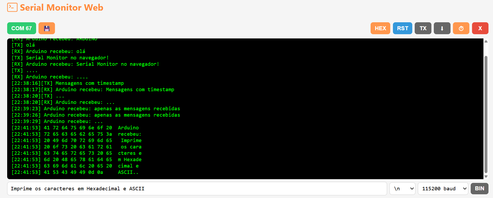
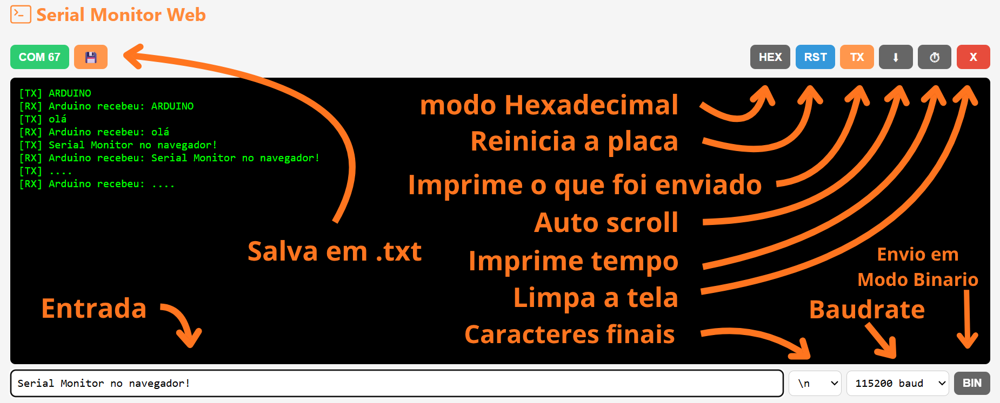
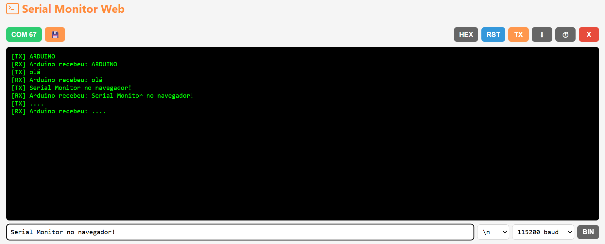
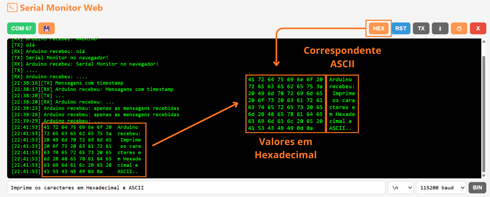
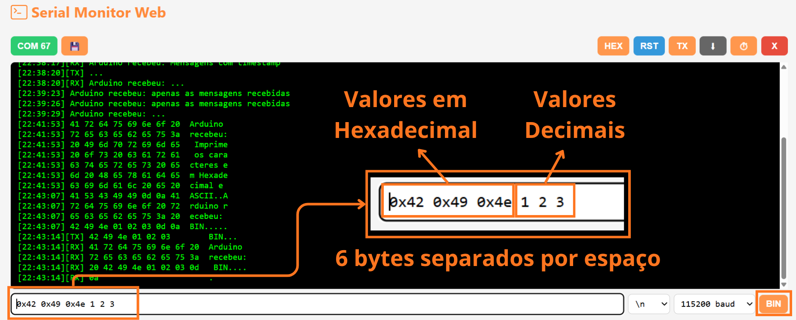

Serial Monitor
Inspirado no Serial Monitor da IDE do Arduino, o Serial Monitor Web é uma ferramenta para comunicação serial que funciona diretamente no navegador, sem precisar instalar uma IDE ou qualquer outro software.
A ideia é simples: abrir o navegador, conectar a placa e começar a testar.
Além das funções tradicionais de um Serial Monitor, ele possui alguns recursos voltados especialmente para testes e debug de comunicação UART, incluindo envio de bytes em modo binário e visualização em hexadecimal.

Por que um Serial Monitor Web?
O Serial Monitor da IDE do Arduino é muito útil para monitorar dados e fazer debug de projetos com Arduino, ESP32 e outros microcontroladores.
Porém, para um teste rápido, abrir uma IDE completa pode ser desnecessário. E quando a IDE não está instalada, é preciso instalar todo o ambiente apenas para fazer uma comunicação serial simples.
O Serial Monitor Web foi criado para resolver justamente esse problema:
Abriu o navegador, conectou a placa e pronto.
Conexão
Ao abrir a ferramenta, selecione a porta serial correspondente à placa.
Depois de conectar, a comunicação pode ser utilizada normalmente para receber e enviar dados.
O monitor pode ser utilizado com diferentes dispositivos que disponibilizem uma interface serial, como:
- Arduino
- ESP32
- Conversores USB-Serial
- Outros microcontroladores com comunicação UART
Interface

A interface é dividida em três partes principais:
- Conexão e saída serial: seleção da porta e área onde os dados recebidos são exibidos.
- Controles: opções para alterar a forma como os dados são apresentados e controlar a comunicação.
- Entrada: campo utilizado para enviar dados para a placa.
Botões e seletores
Savesalva em.txta saida.RSTexecuta o reset fisico do dispositivo conectado se tiver suporte para isso.Funciona por exemplo com Arduino UNO, Nano e ESP32.HEXModo de exibição em hexadecimal.TXHabilita a impressão dos dados enviados. quando esta habilitado eles são identificados como:[TX]<...>e as recepções passam a ser[RX]<...>.-
AutoRollHabilita a rolagem automatica a medida que os dados são enviados ou recebidos. -
ClearLimpa a saida. -
Caracteres de fimSeleção dos caracteres de encerramento que serão adicionados ao final da entrada. -
BINModo de entrada numérico.
Envio de texto
O modo padrão permite enviar texto para a porta serial.

Modo de exibição Hexadecimal HEX
Exibe os caracteres recebidos em formato de hexdump. 8 caracteres por linha com seus respectivos valores a esquerda, e os mesmos caracteres ao final com o simbolo equivalente na tabela ASCII. Muito util pra visualizar os valores reais enviados e principalmente valores sem correspondência na tabela ASCII.

Modo de entrada numérica BIN
Ao inves de usar caracteres a entrada passa a aceitar os valores de cada byte separado por espaço. Os valores podem ser em base decimal de 0 a 255 ou em hexadecimal com o prefixo 0x pra identifica como 0x80 que é 128 em decimal.
